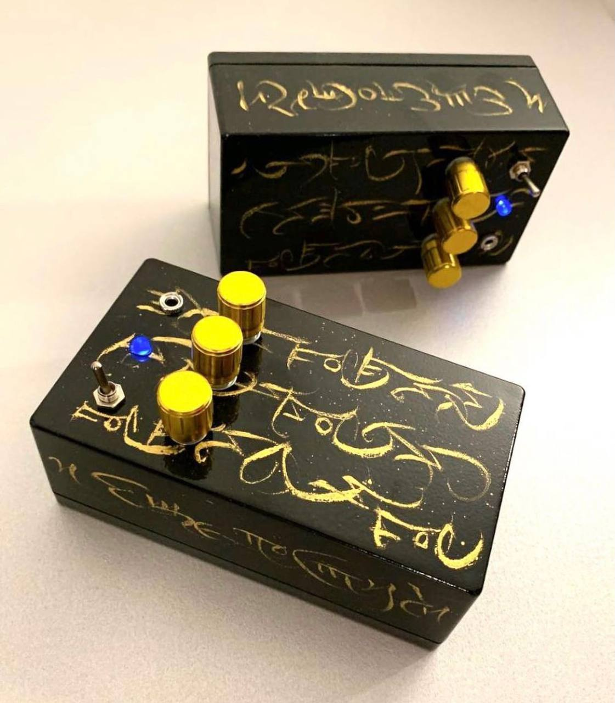
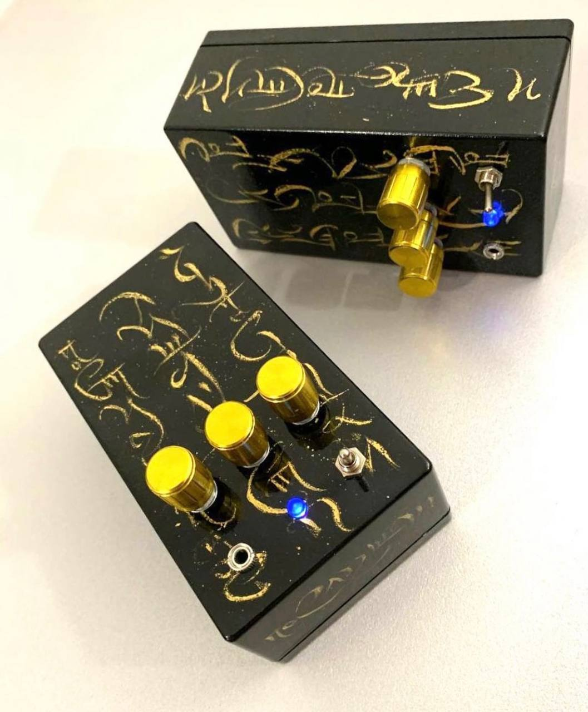

VLADISLAV GENERALOV
Delay Boxes

This is an electroacoustic instrument with a piezodisk and delay module. It captures any vibrations on its surface from tiny scratches to human shouts. This instrument can be used for experimenting with different objects and materials during performances or at the studio.
This device is powered with 9V battery. Three knobs on its surface control delay time, amount of delay effect, output volume.
More than 15 delay boxes were made and sold.
Two exclusive items with calligraphic paintings by Valery Kurshev were made.

